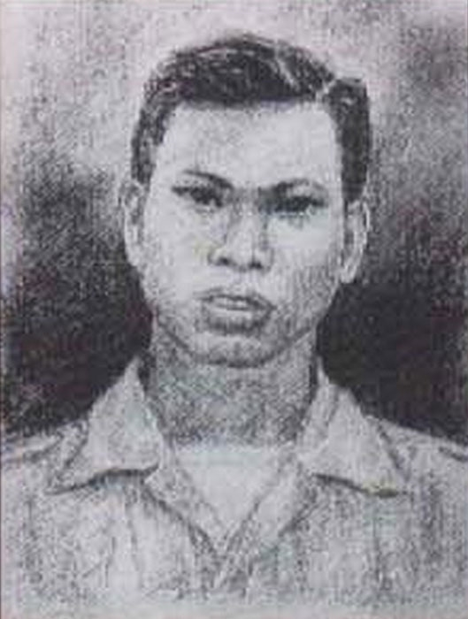
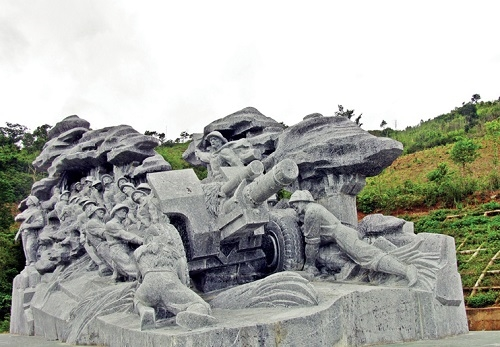
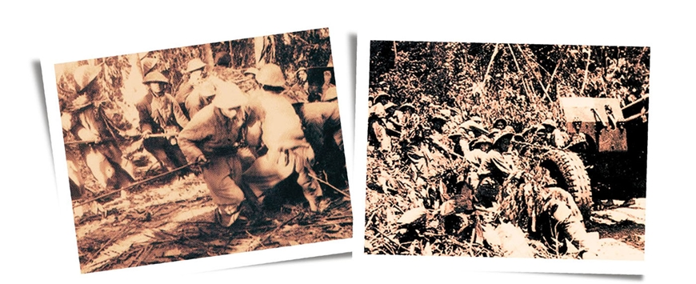
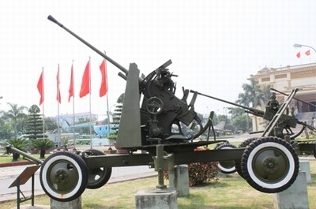
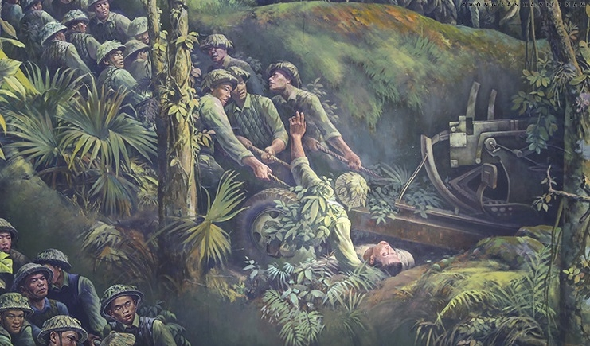

Anh hùng Tô Vĩnh Diện chèn lưng cứu pháo
Tô Vĩnh Diện quê ở xã Nông Trường, huyện Nông Cống, tỉnh Thanh Hóa. Nhà Diện rất nghèo, lên 8 tuổi đã phải đi ở cho địa chủ. Suốt 12 năm đi ở, anh đã phải chịu đựng bao cảnh áp bức bất công. Cách mạng Tháng Tám thành công, Diện thoát cảnh đi ở. Năm 1946, anh tham gia dân quân ở địa phương, đến năm 1949, Tô Vĩnh Diện xung phong vào bộ đội. Những ngày đầu trong quân ngũ, Tô Vĩnh Diện luôn luôn gương mẫu đi đầu trong học tập và công tác.

Tháng 5-1953, quân đội ta thành lập các đơn vị pháo cao xạ chuẩn bị cho đánh lớn, Tô Vĩnh Diện được điều làm Tiểu đội trưởng một đơn vị pháo cao xạ... Pháo cao xạ lúc này là loại vũ khí hiện đại, có lá chắn phía trước, tầm bắn tối đa 6.700m, tầm bắn hiệu quả 2.500 đến 3.000m. Khẩu đội có bảy pháo thủ: Số 1 quay hướng, số 2 quay tầm và đạp cò, số 3 cự ly, số 4 hướng đường bay, góc bổ nhào và tốc độ, số 5 nạp đạn, số 6 tiếp đạn, số 7 dự bị và lo đạn.
Đông Xuân 1953 - 1954, tin tức quân sự từ khắp nơi dội về làm cho các chiến sĩ pháo cao xạ vô cùng sốt ruột. Sau bao nhiêu tháng trời học tập, họ chờ được ra trận đọ sức với không quân địch. Những ngày chờ đợi diễn ra căng thẳng, có vũ khí pháo cao xạ trong tay mà cứ phải nhìn lũ giặc trời hoành hành trên bầu trời, trong lòng ai nấy không yên.
Giữa lúc ấy Tô Vĩnh Diện lại bị ốm nặng, phải nằm điều trị ở quân y viện. Khi đồng chí Tô Vĩnh Diện ra viện trở về thì đơn vị đang gấp rút chuẩn bị lên đường đi Chiến dịch Điện Biên Phủ.
Bộ đội hành quân lên Điện Biên Phủ. Chặng đường kéo pháo vào trận địa vô cùng gian khổ bắt đầu. Pháo phải tháo khỏi xe và thay bằng sức người để kéo. Hàng trăm người thay nhau kéo những cỗ pháo nặng hàng tấn vượt qua mỗi ngày vài cây số đường rừng núi cheo leo, khúc khuỷu. Sau hơn một tuần kéo pháo vào, vượt qua dãy Pa Sông vào chiếm lĩnh ở khu vực bản Tấu, phía Bắc cứ điểm Độc Lập. Vào đến nơi, tưởng nổ súng ngay thì đột nhiên có lệnh kéo pháo ra. Cán bộ, chiến sĩ ngơ ngác, không hiểu vì sao. Tô Vĩnh Diện cũng không khỏi hoang mang. Thế này nghĩa là thế nào? Kéo pháo vào rồi lại kéo pháo ra? Chi bộ Đảng họp bất thường, lãnh đạo, cán bộ, đảng viên, đoàn viên ổn định tư tưởng, tin tưởng vào cấp trên, vào Bộ Tổng tư lệnh.
Quân địch không ngờ rằng quân đội ta có những khẩu pháo lớn dường ấy mà lại bí mật vượt qua được hàng trăm cây số đường rừng, lên dốc, xuống đèo trên những con đường mà ngay đi bộ người ta cũng phải lần mò từng bước một. Quân địch lại không ngờ được rằng hàng tấn sắt thép kia đã được vận chuyển không do một thứ máy móc nào khác ngoài sức lực con người - những người chiến sĩ pháo cao xạ anh hùng với sức lao động phi thường…
Kéo pháo ra gian truân, ác liệt bội phần. Hàng trăm cánh tay bám chặt những sợi dây tời kéo khẩu pháo lặc lè lên dốc, rồi khi xuống dốc thì hàng trăm đôi bàn chân phải dậm thật mạnh tưởng như lún sâu xuống mặt đất, hàng trăm bàn tay ghì chặt những sợi dây buộc pháo, thả cho nó xuống từ từ, mà hai bên họ là vách núi dựng đứng, là vực sâu. Nguy hiểm hơn cả là chiến sĩ đi bên pháo để lao những hòn chèn, giữ cho pháo khỏi tụt và dũng cảm nhất có lẽ là chiến sĩ cầm càng pháo lái cho pháo đi đúng đường. Chỉ sẩy chân, sẩy tay là bị hất xuống vực, là bị bánh pháo đè nát người. Khẩu pháo cứ lầm lũi, lên dốc, xuống đèo gập ghềnh trong đêm tối và còn phải chịu những trận pháo kích của địch.
Con đường kéo pháo này mới được công binh phá rừng, chặt cây làm gấp trong một thời gian ngắn chuẩn bị cho chiến dịch nên còn rất mấp mô, gồ ghề. Chỉ cần bánh pháo chồm qua một hòn đá hay một gốc cây, pháo quật càng sang bên phải hay sang bên trái thì cũng đủ rụng rời chân tay ra rồi.
Tất cả đã chuẩn bị xong. Đêm tối mịt mùng, gần một trăm con người cùng lúc cúi xuống, cầm chắc sợi dây, choãi chân, hơi ngả người về phía sau sẵn sàng đợi lệnh. Những tiếng hô rì rầm nổi lên: Hai... ai, ba... này! Dô... ô... ô ta nào! Dô... ô... ô ta nào!
Khẩu pháo cựa quậy, nhúc nhắc, bánh pháo bắt đầu nhích dần từng cm, trên mặt đường tối nhờ nhờ. Tiếng thở phì phò, hổn hển, tiếng ư ưu... bị nén trong lồng ngực được phát ra, hòa với tiếng đất đá lăn theo bánh pháo rào rào. Mùi mồ hôi chua chua mặn mặn lẫn với mùi cỏ cây bị nghiến nát hăng hắc. Bánh pháo nhích dần, nhích dần lúc một phần ba, lúc một nửa, lúc cả vòng. Gần đến đỉnh Dốc Ba Tời, bộ đội dừng lại nghỉ vài phút, tranh thủ kiểm tra và chuẩn bị đổ dốc. Lúc này các chiến sĩ mới thấy mệt rã rời, chân đau, tay bỏng. Con đường kéo pháo vượt qua đã gian nan vất vả, nhưng chặng đường cuối cùng này gay go gấp bội, pháo phải đổ xuống một cái dốc ba bậc dựng đứng. Anh em công binh đã phải thiết kế ba cái tời liền nhau nên mới có tên là Dốc Ba Tời. Ở bậc dưới cùng dốc càng đứng, vực càng sâu, đường lại vòng. Đổ xong Dốc Ba Tời, pháo leo qua một quả đồi thoai thoải hình mâm xôi thì tới cầu Gỗ. Từ cầu Gỗ ra đường 41 khoảng cách không đầy 300m đường bằng. Nếu tính từ Dốc Ba Tời ra tới đường 41 thì chặng đường kéo pháo chỉ còn gần 2km nữa thôi. Nhưng đây là chặng đường đẫm máu và ác liệt nhất.

Buổi chiều, Tô Vĩnh Diện đã đi theo đoàn cán bộ pháo cao xạ ra nghiên cứu đường đến tận cầu Gỗ. Một đơn vị công binh ở đây đang tranh thủ sửa chữa cầu vừa bị pháo binh địch bắn hỏng. Diện xắn tay áo vào làm với anh em công binh.
Khi quay trở về Dốc Ba Tời, Diện nhìn xuống núi, những khẩu pháo cao xạ đang chuẩn bị đổ dốc, liệu nó có bị lăn xuống vực như một khẩu đội nào không? Không thể được. Diện nghiến răng tự nhủ thầm. Chỉ có thể người mất nhưng pháo nhất định còn!
Vừa lúc đó, phía sau núi, những tia chớp lóe lên liên tiếp rồi một loạt đạn pháo của địch bắn về ầm ầm, nổ tung ngay dưới chân núi. Diện lao nhanh về phía khẩu đội. Lại một loạt đạn pháo nữa của địch bắn về. Đất cát bay rào rào.
Từ lúc chuẩn bị đổ dốc đến giờ, thần kinh của Tô Vĩnh Diện luôn luôn bị căng thẳng. Một loạt tiếng nổ như xé nát mang tai. Theo thói quen, mỗi lần địch bắn về, Tô Vĩnh Diện lại chạy quanh khẩu pháo để xem xét tình hình. Các pháo thủ vẫn hiên ngang đứng vững ở vị trí của mình bên cạnh khẩu pháo.
Bỗng tiếng đồng chí Chính trị viên cất lên, giọng đã khản vì mệt mỏi, vì thức đêm nhưng vẫn còn rõ ràng, rành mạch:
- Các đồng chí Đại đội 827! Giờ phút quyết liệt đã tới. Địch đã bắn về ta và chúng còn tiếp tục bắn nữa. Nhiệm vụ của tất cả chúng ta là phải bảo đảm cho pháo đổ dốc an toàn. Còn người thì còn pháo. Quyết không để pháo mất mà người còn. Các đồng chí có thể thực hiện được không?
- Có! Có!
- Còn người còn pháo! Dù người mất pháo vẫn phải còn.
Diện chạy về vị trí lái càng, anh nói như hét:
- Tôi với đồng chí Tri sẽ bắt lái đoạn này vì buổi chiều tôi đã được đi nghiên cứu cùng đại đội. Các đồng chí cầm chèn cẩn thận nhé, thấy bánh pháo hơi lái ra miệng vực phải lao chèn luôn. Mấy đồng chí "phanh" phải thật thính, có gì phanh lại ngay. Đồng chí Ước thay đổi điều khiển mõ. Đồng chí Đài ốm khoác chặn đi trước dẫn đường. Tất cả phải hiệp đồng chặt chẽ như lúc ta bắn máy bay địch. Đang xuống dốc mà nó bắn pháo về không một ai buông tay, quyết ghìm thật chắc. Còn người còn pháo nghe rõ chưa?
- Rõ! Rõ!
Cốc... cốc. Tiếng mõ bắt đầu.
- Hai... ai ba... dô... ô ta nào, dô... ô ta nào!
Khẩu pháo bắt đầu nhích, nhích từng đoạn theo nhịp mõ và nhịp thở phì phò của hàng chục con người. Ở đầu càng, Diện mở to mắt, ghì, lái theo mảnh chăn trắng trước mặt. Mảnh chăn lúc ẩn lúc hiện như trong giấc mơ. Mồ hôi Diện vã ra như tắm. Khẩu pháo đã xuống hết dốc thứ nhất, chuẩn bị đổ dốc thứ hai. Đồng chí trung đội trưởng đợi sẵn ở đầu dốc:
- Nó vẫn bắn về đây, xê một, xê hai đã xuống hết rồi. Khẩu 3 của các đồng chí cho xuống ngay đi. Tranh thủ để lấy đường cho các khẩu đội bạn xuống trước sáng. Gắng lên nào, bảo vệ pháo tới đích.

Pháo đổ dốc thứ hai, chớm đầu dốc thứ ba thì pháo địch lại bắn về. Mặc những tiếng nổ đằng trước, đằng sau, bên phải, bên trái. Pháo cứ chuyển động tụt dần xuống núi. Bốn sợi dây to bằng cổ tay được kiểm tra lại từng đoạn. Chính trị viên, Đại đội trưởng đều có mặt. Đồng chí Trung đội trưởng tự mình soi đèn pin kiểm tra lại các nút buộc.
Tiếng mõ "cốc... cốc" lại vang lên đều đặn trong đêm khuya. Khẩu pháo ngoan ngoãn nhích từng bước trôi theo độ dây thả từ bên trên. Mấy sợi dây lúc căng, lúc chùng lại. Mấy dòng người như mấy hàng chân rết lúc lắc vặn vỏ đỗ xoắn vào nhau.
Tô Vĩnh Diện cùng với Tri lái pháo nhịp nhàng ăn khớp với nhịp mõ điều khiển.
Bỗng nhiên, ánh chớp lóe lên ở phía Mường Thanh, kèm theo là những tiếng nổ đầu nòng của hàng chục khẩu pháo địch. Đại đội trưởng, trung đội trưởng cùng hét lên:
- Cứ bình tĩnh, nó bắn mặc xác nó!
Pháo địch như những đợt sóng hung dữ ào ào xô tới. Những tiếng nổ đinh tai nhức óc. Đất đá bắn tung tóe. Một phút yên lặng, bồn chồn căng thẳng trùm lên tất cả. Nhưng lập tức nó bị xua tan. Cùng một lúc có nhiều tiếng thét: "Bám chắc vào, bám chắc vào! Không để pháo đổ! Còn người còn pháo, anh em ơi!".
Tô Vĩnh Diện gào từng tiếng một:
- Ghìm, ghìm chắc, chết không rời pháo!
Anh choãi chân, ráng hết sức cùng với Tri du mạnh càng pháo vào vách núi. Khói đạn phả vào mặt nóng hầm hập.
Bên trên, mấy chiến sĩ bộ binh bị trúng đạn ngã gục xuống. Nhưng hàng chục con người vẫn chụm vào nhau, cắm chân xuống đất vững vàng. Khẩu pháo vẫn từ từ trôi trong cơn sóng gió.
Diện nghiến răng ghì chặt tay lái, mắt mở trừng trừng vẫn nhìn theo mảnh khăn trắng dẫn đường. Mặt dốc bị cày lên vì pháo địch, khẩu pháo lắc lư, giật cục. Lưng Diện vẹo đi, hai vai tê dại không còn cảm giác nữa.
Lại một loạt pháo địch bắn về. Tiếng nổ lại bị át đi bởi hàng chục tiếng hét: "Bám chắc, quyết tâm bảo vệ pháo". Người Diện bị dồn mạnh về phía trước tưởng gẫy làm đôi. Khẩu pháo lao xuống ầm ầm. Diện hét thật to: "Chết không rời pháo!".
Một mảnh pháo chém đứt đôi sợi dây tời, mọi người mất đà, ngã sấp ngã ngửa, còn ba sợi dây rừng không đủ sức ghìm khối thép khổng lồ đang lao xuống dốc. Sáu, bảy chục con người bị kéo lê sềnh sệch. Có nhiều tiếng gọi thất thanh trên đầu dốc:
- Đứt dây rồi, ghìm lại, ghìm lại...
- Phanh, phanh, chèn, chèn vào.
- Đồng chí Diện lái pháo vào... ào!
Một hòn chèn lao tới. Khẩu pháo vẫn phăng phăng lao xuống. Một chiến sĩ đuổi theo pháo lao thêm được hòn chèn thứ ba vào bánh. Pháo vẫn lao ầm ầm hất mạnh đồng chí xuống vực. Càng pháo nảy lên, quật xuống trong tay Diện. Tri bị hất mạnh vào vách núi, không dậy được nữa. Khẩu pháo càng lao đà càng mạnh. Tất cả mọi thứ chân, phanh, mô đất... không đủ sức ghìm nổi khẩu pháo nữa. Nhiều chiến sĩ vẫn dũng cảm bám lấy pháo, họ bị kéo lê lết trên mặt đường.
Phía trước khẩu pháo đang ầm ầm lao xuống dốc. Chỉ có một mình Diện. Diện cắn môi, lấy hết sức đẩy càng pháo vào vách núi. Khẩu pháo đứng sững lại tưởng như đã chịu thua sức lực và trí tuệ của con người. Nhưng rồi nó lại quật mạnh càng hất tung hai chiến sĩ bám bên cạnh xuống vực và hùng hổ lao xuống. Chỉ còn một quãng ngắn là tới chỗ đường vòng. Cái vực sâu đen ngòm đã hiện ra. Giữa lúc đó, một chiến sĩ lao kịp tới ngang thân pháo, chiến sĩ đó bị bật văng ra xa.
Khẩu pháo đồ sộ vẫn lao xuống dốc ầm ầm. Hai tai Diện có lúc tưởng như bị điếc đặc, nghe có lúc thấy gió táp vào mang tai ù ù. Mảnh chăn trắng phía trước không còn nữa. Trước mắt Diện chỉ là một màu đen mờ mịt, đồi núi, cây cối lướt nhanh vùn vụt.

Khẩu pháo của tiểu đội Diện, khẩu pháo ngày đêm anh săn sóc lau chùi, yêu quý nó, bây giờ như một con ngựa bất kham cứ lao đi, lao đi không còn sức nào cản lại được nữa. Diện thu hết sức lực một lần nữa, đẩy mạnh càng pháo vào vách núi. Khẩu pháo nhảy qua mô đất, hất càng lại và nhấc bổng Diện như muốn hất tung anh lên sườn dốc. Diện vội ghì chặt hai tay không chịu rời pháo, người anh một lần nữa bị quật mạnh.

Tô Vĩnh Diện đuối sức lắm rồi, mồ hôi ướt đẫm áo trấn thủ, đôi tay tê dại vẫn bám chặt lấy càng pháo. Bây giờ Tô Vĩnh Diện không còn phân biệt được thời gian, được cảnh sắc xung quanh. Mắt anh mờ đi vì mồ hôi từ mi mắt tràn xuống. Tai anh ù lên trong những tiếng động như gõ rất nhiều mảnh kim khí bên màng tai. Tô Vĩnh Diện nghiến chặt răng tưởng như vỡ quai hàm. Trong giờ phút nguy nan ấy, anh buông tay lái, đạp mạnh hai chân, cả thân mình Diện bật như thỏi cao su lao vào trước vành bánh pháo. Khẩu pháo chồm lên rồi cuốn anh vào gầm chiếc đế kích đằng trước đè xuống chiếc mũ sắt anh đang đội. Pháo dừng hẳn, mọi người chạy đến chèn cứng bánh, chặt gốc cây, kéo pháo lùi lại đưa Tô Vĩnh Diện ra ngoài. Vài phút sau tim anh ngừng đập.
Sau đêm Tô Vĩnh Diện hy sinh để bảo vệ khẩu pháo, toàn Đại đội 827 đã nghiêm trang thề trước mộ người liệt sĩ anh hùng: "Noi gương đồng chí, chúng tôi sẽ chiến đấu đến cùng, tiêu diệt hết máy bay địch".
Tấm gương hy sinh cứu pháo của Tô Vĩnh Diện được toàn mặt trận học tập noi theo đưa pháo ra an toàn. Ngay tại mặt trận, Tô Vĩnh Diện được truy tặng Huân chương chiến công hạng Nhất. Anh hùng liệt sĩ Tô Vĩnh Diện đã đi vào lịch sử như một huyền thoại - quên mình cứu pháo. Ca ngợi tấm gương chói sáng đã anh dũng hy sinh, trong bài thơ "Hoan hô chiến sĩ Điện Biên", nhà thơ Tố Hữu đã viết:
“Những đồng chí chèn lưng cứu pháo
Nát thân, nhắm mắt, còn ôm”
Ngày 7-5-1956, đồng chí Tô Vĩnh Diện được truy tặng danh hiệu Anh hùng lực lượng vũ trang nhân dân và trở thành người anh hùng Pháo cao xạ đầu tiên của quân đội ta ngã xuống trên mặt trận Điện Biên Phủ. Hiện nay, hài cốt của đồng chí được Đảng và Nhà nước quy tập và an táng tại nghĩa trang Đồi A1, thành phố Điện Biên Phủ.